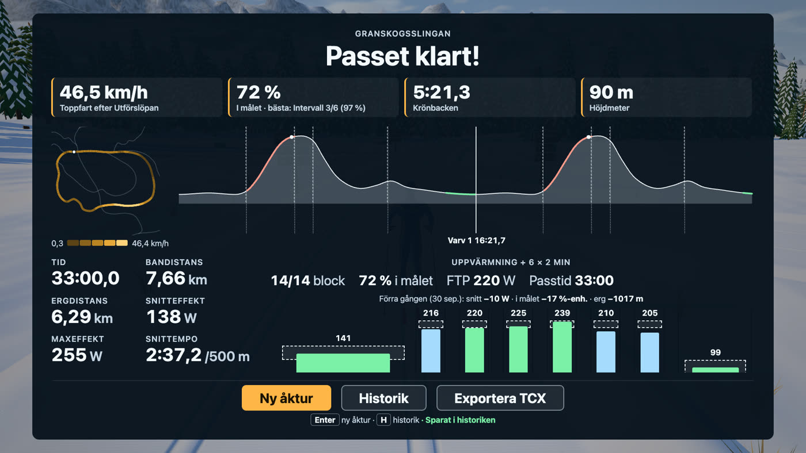
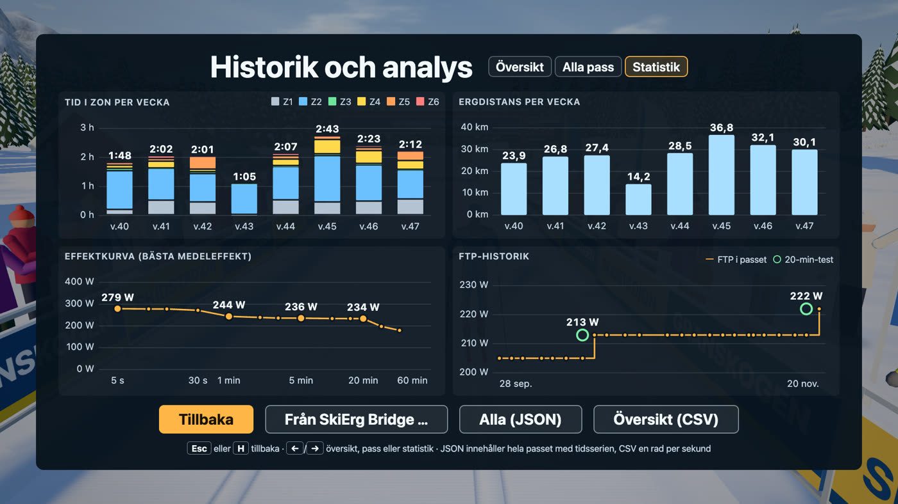
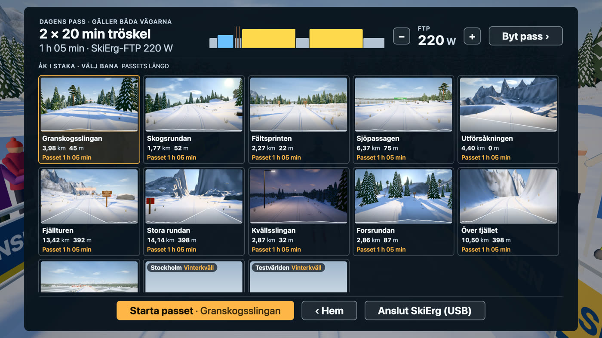
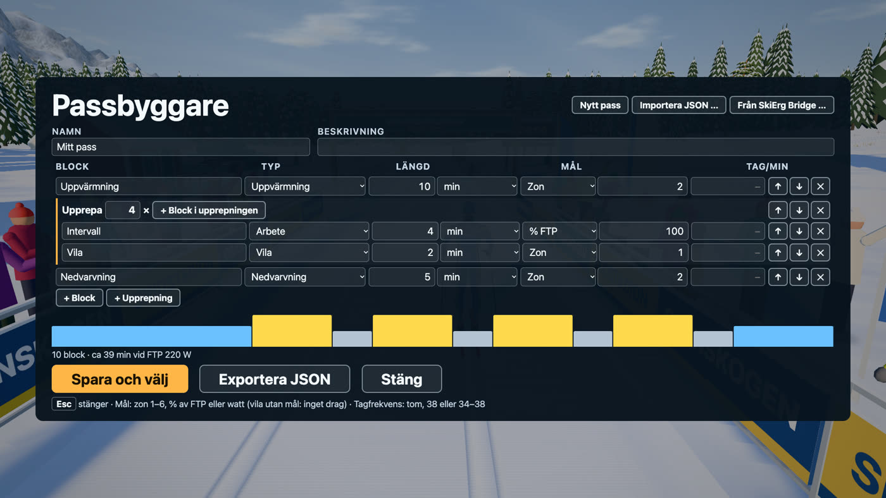
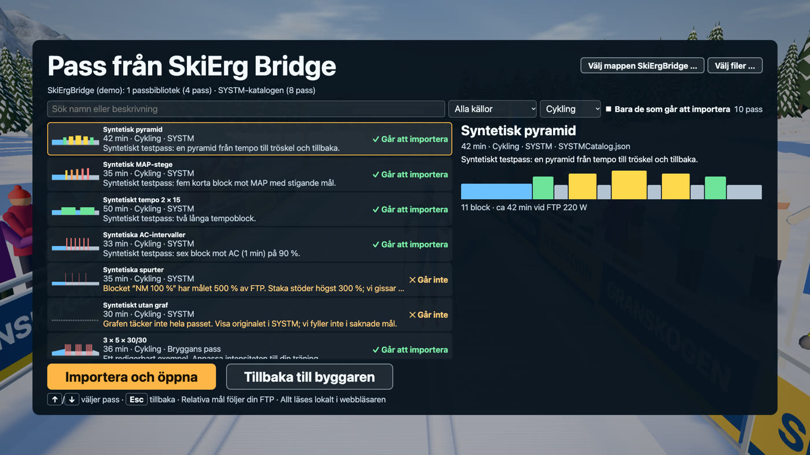

Galleri
Så ser det ut på spåret.
Korta klipp och bilder rakt ur appen. Allt här finns i den nuvarande versionen.
01 · Miljöer
Skog, snö och stad.
Granskogen
Sol, långa skuggor och en pistmaskin som just preparerat spåret.
Skymning och snöfall
Tid på dygnet och väder byter ljus, färg och sikt.
Gamla stan
En sprint genom smala gator med lyktor och upplysta fönster.
02 · Funktioner i bild
Pass och tävling mot dig själv.
Pass med intervaller
Passet visar block, mål i watt och tagfrekvens, och ett byte annonseras när nästa block börjar.
Ghosts
Åk mot dina tidigare åk. Ghosten syns som en blek åkare på banan och HUD:en visar avståndet.
03 · Analys och verktyg
Efter passet, och före.





Fler funktioner och hur det hänger ihop finns på startsidan.